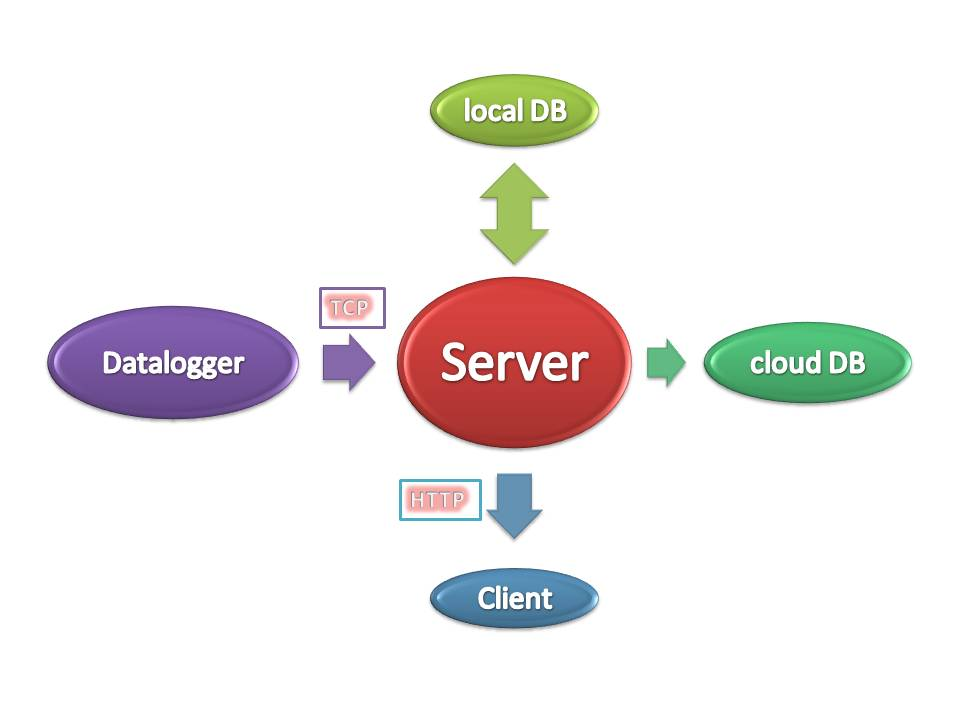

Automatic Weather Station
Real time commmunication ....
... from datalogger to browser

View it live at IPSA Weather Station
Heads Up
Some really multi-disciplinary engineering jargons coming your way.
Weather
... is all around us
... some of it, we can measure
Station
... this one does'nt move.
What can we measure
- Atmospheric Pressure
- Temperature
- Humidity
- Solar Radiation
- Rainfall
- Wind Speed
- Wind Direction
... so far
How ?

Or

Click here for details about sensors and connections
And

DT80M Datalogger - details
What are those ports on the side
- Ethernet Port
- USB Port
Server
- Query the data from the logger
- Format and parse the data
- Store it into local database
- Store it into cloud database
- Upload data to World weather aggregators
- Send to the browser
Data Flow
Software Stack
NodeJS + MongoDB
AngularJS + Socket.IO
Query the data from the logger
//Create a TCP socket to read data from datalogger var tcp_socket = net.createConnection(TCP_PORT, TCP_HOST); tcp_socket.on('connect', function(connect) { // Send this string to set the output format for the Datalogger tcp_socket.write("/h/E/M/R"); console.log('connection established with TCP host: ' + TCP_HOST); tcp_socket.setEncoding('ascii'); });
Store data in local mongo database
//Connect to the database - using the module mongojs - which exposes mongodb like API var db = require("mongojs").connect(databaseUrl, collections); //Insert data - now formatted to dbString - into the collection raw_data db.raw_data.insert(dbString, function(err, saved) { if( err || !saved ) console.log("Data not saved"); else console.log("Data saved"); });
Store data in cloud mongo database
// Save the cloud db on MongoLab mongodb.MongoClient.connect(uri, function (err, cloud_db) { cloud_db.collection('raw_data', function(err, collection) { if(!err) { collection.insert(dbString, function(docs) { collection.count(function(err, count) { if(!err) { console.log("Saved to mongolab"); } }); }); } }); });
Upload data to World weather aggregator
To OpenWeatherMap.org
// Upload data to openweathermap.org request.post(url_owm, {form:{'temp':dbString.temp_c, 'wind_dir': dbString.wind_dir, 'wind_speed': dbString.wind_speed_mps, 'humidity': dbString.humidity, 'pressure': dbString.pressure_mbar, 'lat': dbString.lat, 'long': dbString.long, 'lum': dbString.solar_rad_wpsqm, 'name': "AWSIES1" }}, function optionalCallback (err, httpResponse, body) { if (err) { return console.error('upload failed:', err); } console.log('Upload successful on OWM! Server responded with:', body); });
Socket.IO
On the server
// Hook Socket.io into Express var io = require('socket.io').listen(server); tcp_socket.on('data', function(data) { // This event is emitted, observe the matching event in the frontend controller. // It receives this sent livedata and updates the view accordingly. io.sockets.emit('livedata', { livedata: data });
On the client
<!-- Include the socket.io - in html scope now --> <script type="text/javascript" src="/socket.io/socket.io.js"></script> var socket = io.connect("103.9.12.125:8000"); socket.on('livedata', function(data) { //Do something with the data

AngularJS on the Frontend
<tbody ng-repeat="weather_row in weatherdata"> <tr> <td>{{ $index + 1 }}</td> <td>{{ weather_row.sensor }}</td> <td>{{ weather_row.value + " " + weather_row.unit }}</td> </tr> </tbody>
What has been done
... of the weather
- Some of it is measured
- Some of it is captured
- Most of it is stored
- and transmitted to the server which
- Saves it to a local DB
- Saves it to a cloud DB
- Uploads it to world weather aggregators
- Relays it to the browser
all in real-time ... automatically
Automatic Weather Station 1.0 @ IPSA
What next
- Low-cost
- Mobile/Portable
- Wireless
- Thin